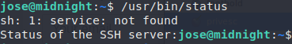
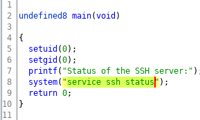
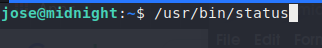
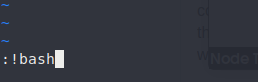
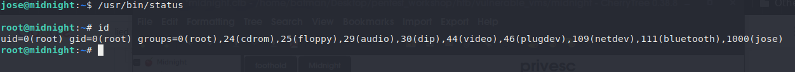
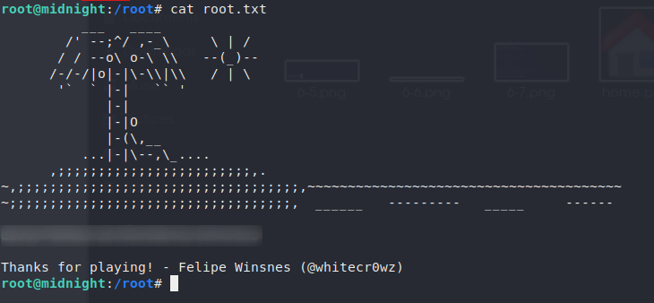

privesc
For gaining root access I enumarated the box using linpeas, linux exploit suggester, LinEnum. I couldn't find any exploit or binary. A lot of time passed but couldn't find a way to get to root shell. Then suddenly after running a command (find / -type f -user root -perm /u+s -ls 2>/dev/null) and checking for suid permitted binaries, i came across a binary called ‘/usr/bin/status’. I ran the binary and it showed me an error saying

Hmm...interesting!!! Looked like it wanted to show me the status of ssh service but the ‘service’ binary was not present in the system. I downloaded the binary and opened it with ghidra and went to the main function.

On line 5 and 6 it was setting it's id to be 'root' and on the line 8 it was calling system to run “service ssh status”. But here lied our way to gain root access.
So the system didn't know where to find ‘service’. What if we tell it that i have the file you are looking for and supply our malicous (not much) one instead. So we created a file named service and we put 2 lines of codes (1 would do the trick i was just making sure). Our super malicious code
#!/bin/bash
/bin/vi
I saved the file to /home/jose/bin/ directory and exported our file location to path variable.



KAAAAAAAABOOOOOOOM!

And our flag

Thank you. I enjoyed the box whitecr0wz.